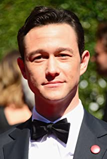
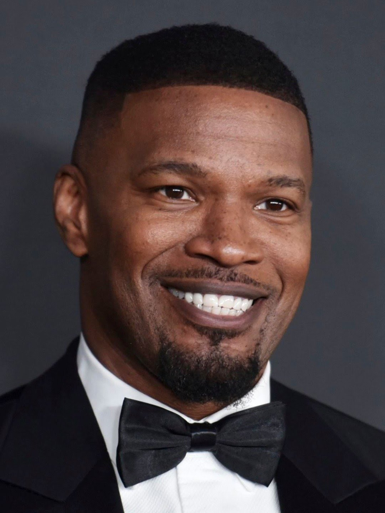

Leonardo DiCaprio
Przełomem w jego karierze była
rola upośledzonego chłopca w filmie Co gryzie Gilberta Grape’a, za którą został nominowany do Oscara jako
najlepszy aktor drugoplanowy.W 1997 roku na festiwalu filmowym w Berlinie otrzymał
Srebrnego Niedźwiedzia dla najlepszego aktora za rolę w filmie Romeo i Julia.
Wielkim sukcesem okazał się jeden z najbardziej nagradzanych filmów w historii kina Titanic (1997)
wyreżyserowany przez Jamesa Camerona, który zdobył jedenaście Oscarów.DiCaprio zagrał w nim rolę
Jacka Dawsona u boku brytyjskiej aktorki Kate Winslet, z którą aktor nawiązał długoletnią przyjaźń.

Joseph Gordon-Levitt
Na kinowym ekranie wystąpił po raz pierwszy w roli studenta w komedii familijnej Beethoven (1992)
oraz dramacie biograficznym Roberta Redforda Rzeka życia (A River Runs Through It, 1992) u boku Brada
Pitta, Craiga Sheffera i Toma Skerritta. Za postać Rogera Bommana w komedio-dramacie familijnym
fantasy Anioły na boisku (Angels in the Outfield, 1994) zdobył nominację do nagrody Saturna. Jego
kreacja Tommy’ego Solomona w sitcomie sci-fi NBC Trzecia planeta od słońca (3rd Rock from the Sun,
1996–2001) została uhonorowana dwukrotnie hollywoodzką nagrodą YoungStar.
Joseph Gordon-Levitt
Page przyszedł na świat 21 lutego 1987 roku w Halifax. Po urodzeniu przypisano mu płeć żeńską,
wtedy znany był jako Ellen Page.Uczęszczał do Halifax Grammar School, a także przez
pewien czas uczył się w Queen Elizabeth High School. Po ukończeniu Shambhala School w 2005 roku
Page spędził dwa lata w Toronto, ucząc się w Interact Program w Vaughan Road Academy, wraz z bliskim
przyjacielem i kanadyjskim aktorem Markiem Rendallem.Otrzymał nagrody Genie i ACTRA Maritimes Award
oraz był nominowany do Oscara za pierwszoplanową rolę w filmie Juno.
Gerard Butler
Po ukończeniu studiów wyjechał do Los Angeles, gdzie mieszkał przez półtora roku. Wtedy wystąpił
jako statysta w filmie Bodyguard (1992) z Whitney Houston. Po powrocie do Szkocji rozpoczął staż
w kancelarii prawniczej w Edynburgu, z której został zwolniony tydzień przed egzaminem końcowym.
Przeniósł się do Londynu, gdzie imał się różnych zajęć, np. był kelnerem. Jego kariera aktorska
rozpoczęła się, gdy podszedł w londyńskiej kawiarni i został dostrzeżony przez aktora i reżysera
Stevena Berkoffa, który dał mu rolę na scenie w tragedii Szekspira Koriolan w teatrze Mermaid.

Jamie Fox
W 2007 roku Foxx odsłonił własną gwiazdę na Hollywood Walk of Fame, a podczas wystąpienia
powiedział: „[to był] jeden z najbardziej niesamowitych dni w moim życiu.”
W roku 2012 wziął udział w filmie Django, w którym zagrał główną rolę. Otrzymał za nią kilka nominacji
do nagród w kategorii najlepszy aktor m. in. Czarnej Szpuli oraz MTV Movie Awards. Po raz kolejny wcielił
się w Django na planie Milion sposobów jak zginąć na Zachodzie w 2014. W październiku 2020 potwierdzono,
że Foxx pojawi się jako Electro, w Spider-Man: No Way Home. Rolę tę zagrał już w filmie
Niesamowity Spider-Man 2.
Jasse Eisenburg
W 2008 otrzymał nagrodę dla wschodzącej gwiazdy festiwalu filmowego Vail Film Festival.
W roku 2009 wystąpił w komediodramacie Adventureland i horrorze komediowym Zombieland, które to role
przyniosły mu uznanie krytyków. Następnie w filmie The Social Network zagrał postać Marka Zuckerberga,
współzałożyciela serwisu społecznościowego Facebook. Za tę rolę otrzymał nagrodę filmową National
Board of Review Award, a także został nominowany do Oscara w kategorii najlepszy aktor pierwszoplanowy.
Zagrał w komedii przygodowej 30 minut lub mniej (2011) i dreszczowcu Iluzja (2013).
Tom Hanks
W 1980 został zaangażowany do opowiadającego o parze cwaniaków telewizyjnego serialu komediowego
Bosom Buddies. Pierwsze jego role na dużym ekranie to również występy w komediach: Plusku,
Wieczorze kawalerskim czy Skarbonce. W 1993 Tom Hanks pokazał wszystkim, że drzemie w nim również
wielki talent dramatyczny. Dowiodła tego także jego wielka kreacja w filmie Forrest Gump. Zarówno
za jedną, jak i drugą rolę został nagrodzony Oscarem. W 1999 Tom Hanks otrzymał Złoty Glob za rolę
kapitana Millera w filmie Stevena Spielberga Szeregowiec Ryan.